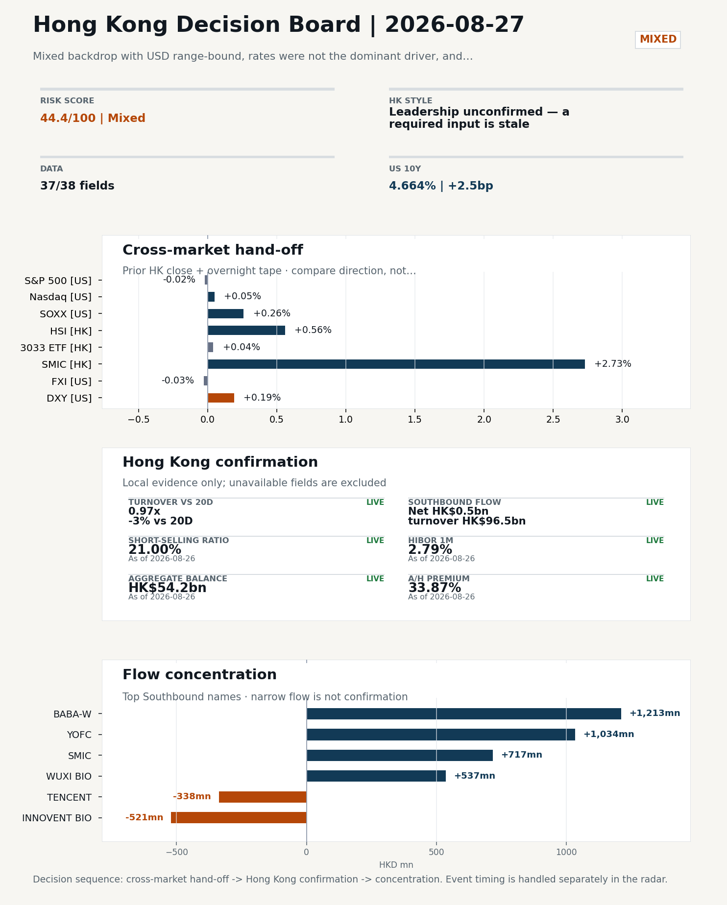
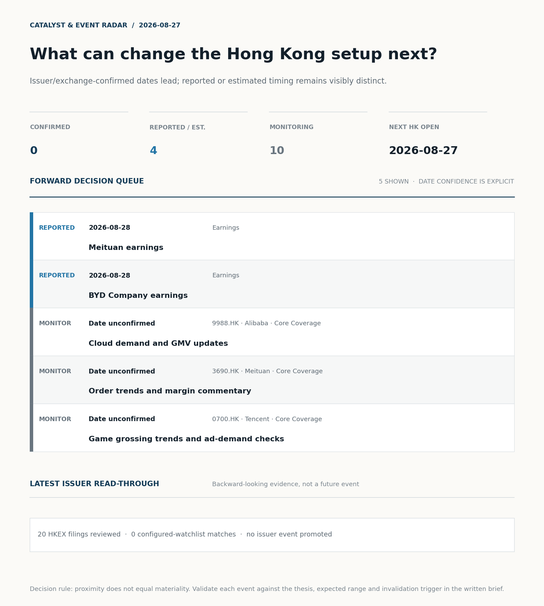
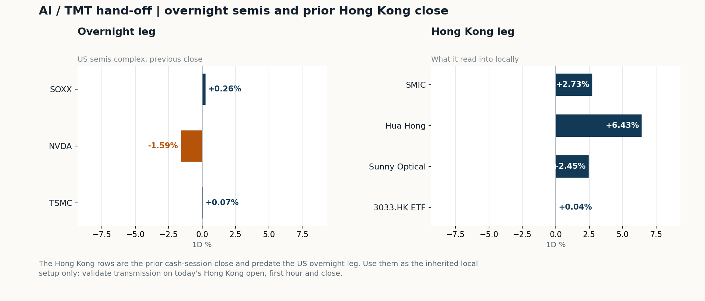
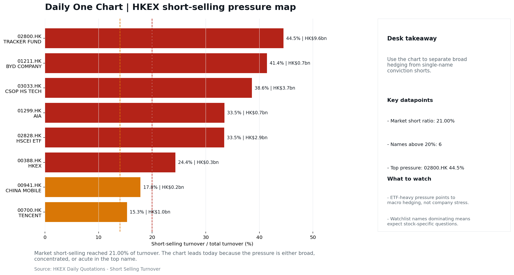

Meituan · 3690.HK
Estimate comparison unavailable
Investor read
Calendar monitor only; no consensus comparison is available, so this is not yet an earnings view.
Next check
Prepare the KPI and valuation bridge before the release window.
Hong Kong Market Intelligence
Daily research note · 2026-08-27
Decision brief · Source-audited
Semis led lower: SOXX +0.26%, NVDA -1.59%, TSMC +0.07%. HSI +0.56% and 3033.HK +0.04%.
Verdict: NO CALL. The 2026-08-26 report published no directional call (neutral regime).
Recent record. 6 confirmed / 4 broken over the last 10 scoreable calls (60.0% hit rate). This is a directional close-to-close diagnostic, not a track record.
Global-to-Hong Kong signals
Decision-useful subset: each row states the implication and the next test. Descriptive secondary monitors are kept out of the five-minute scan.
| Signal | Last / move | Interpretation | Confirmation / invalidation |
|---|---|---|---|
| S&P 500 | 7,675.70 / -0.02% | US beta was flat and offers little directional lead for Hong Kong. | Watch whether Nasdaq and offshore-China proxies move the same way. |
| Nasdaq 100 | 29,224.52 / +0.05% | Growth tracked broad beta, so the move looks market-wide rather than duration-led. | 3033.HK versus HSI leadership carries the read; rising yields would undo it. |
| Hang Seng Index | 25,652.97 / +0.56% | The index was carried by old-economy and H-share names, not by broad participation: 3033.HK differs by 0.52pp. | Southbound participation decides whether this is investable or just a print. |
| Hang Seng TECH ETF (3033.HK) | 4.4980 / +0.04% | Hong Kong growth lagged, so broad-index strength is not yet a duration signal. | Needs a stable CNH and Southbound buying to become a duration signal. |
| Semiconductors (SOXX) | 515.40 / +0.26% | Semis moved with the Nasdaq, so the tape is broad rather than cycle-specific. | SMIC and Hua Hong at the open show whether it transmits to Hong Kong. |
| US 10Y | 4.6640% / +2.5bp | The yield proxy rose, tightening the discount-rate backdrop for long-duration Hong Kong growth. | Read it through 3033.HK relative performance, not the index level. |
| USD/CNH | 6.7140 / +0.07% | A higher USD/CNH means a weaker offshore renminbi, a headwind for offshore-China sentiment. | FXI and Southbound flow decide whether this reaches Hong Kong equities. |
| VIX | 15.21 / -1.55% | Lower implied volatility reduces near-term stress, but is supportive only if equity breadth confirms. | Falling volatility on narrowing breadth is a warning, not support. |
Secondary monitors retained in the source bundle: SMIC (0981.HK), CSI 300, China 10Y, CN-US 10Y spread, DXY, USD/HKD, Brent crude, COMEX gold, Copper.
Hong Kong local confirmation
| Check | Value | Status | Source / as of | Why it matters |
|---|---|---|---|---|
| Main Board turnover vs 20D | 0.97x | -3% vs 20D | Live local | HKEX | 2026-08-26 | Trailing 20-session average turnover was HK$261.4bn. |
| Southbound / Northbound net flow | Southbound Net HK$0.5bn | turnover HK$96.5bn | Northbound Turnover RMB255.6bn | net not reported | Live local | HKEX Connect | 2026-08-26 | Southbound net buy is calculated from HKEX disclosed buy and sell turnover. |
| Short-selling ratio | 21.00% | Live local | HKEX | 2026-08-26 | Official HKEX stock-level short-selling table, aggregated as a share of total market turnover. |
| AH premium index | 33.87% | Live public | Yahoo | 2026-08-26 | Equal-weighted average across 17 A/H pairs that resolved today. Composition varies by day, so the level is not comparable with prior reports (fixed basket incomplete: missing Bank of China). [trimmed] |
| USD/HKD spot vs band | 7.8380 | band 7.7500 to 7.8500 | Live quote + local | Yahoo | 2026-08-26 | Mid-band: 120 pips from the weak side and 880 pips from the strong side, so the peg is not an active constraint. Official Convertibility Undertakings define the linked-rate stress boundaries for USD/HKD. |
| HIBOR 1M | 2.79% | Live local | HKMA | 2026-08-26 | 1M HIBOR is the cleanest quick read for Hong Kong funding conditions and equity-duration pressure. |
| Hong Kong leadership | Leadership unconfirmed - a required input is stale | Proxy | HSI / HSCEI / 3033.HK ETF relative | 2026-08-26 | Use HSI / HSCEI / 3033.HK ETF relative moves as the opening style read. |
Risk state and evidence
Composite risk score: 44.4/100 | Regime: Mixed
| Component | Score impact | Evidence |
|---|---|---|
| US beta | -0.1 | S&P 500 -0.02% |
| HK growth ETF proxy | +0.2 | 3033.HK ETF +0.04% |
| Semis complex | +1.3 | SOXX +0.26% |
| Offshore China proxy | -0.1 | FXI -0.03% |
| Dollar pressure | -1.9 | DXY +0.19% |
| Volatility | +3.1 | VIX -1.55% |
| HK short-selling | -8 | Short-selling ratio 21.00% |
| HK turnover | +0 | Turnover 0.97x 20D |
Base 50 plus the component deltas above. Semis complex entered the score on 2026-08-22; earlier scores in the ledger exclude it.
Morning Checklist

Catalyst & Event Radar

Chart read: No issuer/exchange-confirmed event date is populated; 4 reported or estimated timing item(s) and 10 undated trigger(s) remain explicit.
Source: Public calendars, issuer disclosures and configured research watchlists
Market Setup Core tape. Overnight US equities were effectively flat with an internal split: S&P 500 -0.02%, Nasdaq 100 +0.05%, while Nasdaq 100 outperformed FXI by 48bp, confirming US tech leadership rather than broad risk-on. Main driver. The US 10Y rose 2.5bp to 4.664% and USD was range-bound with a +0.15% intraday move, so rates and FX were not the dominant driver. HK relevance. The clearest overnight signal for Hong Kong was Alibaba's $10.2bn placement to fund AI, which reset the China Internet narrative and likely steers the HK open tone.
Key Drivers
Hong Kong Read-Through Opening implication. For the 27 Aug HK session, the Alibaba placement sets the first-order tone for China Internet and 9988.HK specifically. Hong Kong style leadership and flow confirmation are set out in the Hong Kong review below.
Watch Points
Curated overnight stories
AI / TMT hand-off

Overnight leg. The overnight semis leg was flat (-0.42% average), so it does not set the direction for Hong Kong tech today. Hong Kong expression. Let local flow and style leadership drive the tech read rather than the overnight tape. Observable test. Watch whether SMIC and Hua Hong trade with HSCEI rather than with the overnight semis leg.
| Name | Role in the chain | 1D | Leg |
|---|---|---|---|
| SOXX | Semis complex | +0.26% | overnight |
| NVDA | AI capex narrative | -1.59% | overnight |
| TSMC | Foundry demand | +0.07% | overnight |
| SMIC | Leading-edge / domestic substitution | +2.73% | Hong Kong |
| Hua Hong | Mature-node pricing cycle | +6.43% | Hong Kong |
| Sunny Optical | Hardware and optics supply chain | +2.45% | Hong Kong |
| 3033.HK ETF | Broad HK tech beta | +0.04% | Hong Kong |
Clock discipline. The Hong Kong rows are the prior cash-session close and predate the US overnight leg. Use them as the inherited local setup only; validate transmission on today's Hong Kong open, first hour and close.
Local Tape Setup Local read. Hong Kong opens against a mixed backdrop where the prior session was already positive (HSI +0.56%, HSCEI +1.05%) but the 21.0% short-selling ratio flags fragile breadth. Verification point. The overnight signal is split: Nasdaq 100 outperformed FXI by 48bp, while Alibaba's $10.2bn AI placement reframes the China Internet narrative but NVDA's -1.59% drag tempers the AI capex read. Risk to watch. Southbound net was a thin HK$0.5bn on HK$96.5bn turnover, so the prior cash tape is not a clean flow-led bid.
Style and Local Leadership Style call. Leadership unconfirmed - a required input is stale.
Flow Confirmation Official Stock Connect evidence is available; the Flow Tracker confirms whether local money supports the price action.
Follow-Through Checklist Follow-through check. Watch whether 9988.HK opens in sympathy with the Alibaba placement while SMIC and Hua Hong extend, and whether 3033.HK closes the gap to HSCEI on a same-date print - that combination would confirm semis/AI-capex as the leadership bucket rather than just SOE breadth. Confirmation is incomplete if 3033.HK fails to refresh on a comparable date or if Southbound net fails to widen from the HK$0.5bn prior-day print. Northbound net-buy is unavailable in the current HKEX disclosure, so onshore flow confirmation must rely on turnover and AH-premium dispersion rather than headline net. Failure condition. Any style claim remains invalid while the required relative-performance fields are missing or stale.
Cross-asset attribution
| Driver | Direction | Score | Evidence | HK implication |
|---|---|---|---|---|
| Short-selling pressure | drag | 4.2 | HKEX short-selling ratio was 21.00%. | Elevated short activity argues for extra confirmation before chasing rebounds. |
| Oil and geopolitics | supportive | 2.06 | Oil moved -2.57%. | Split the read between energy/cyclicals support and margin/geopolitical pressure. |
Local flow evidence
Flow Takeaways
Stock Connect Southbound Active Names
| # | Ticker | Name | Buy | Sell | Net buy | HKEX turnover rank |
|---|---|---|---|---|---|---|
| 1 | 09988.HK | BABA-W | HK$2,468.1mn | HK$1,255.4mn | HK$1,212.7mn | 2 |
| 2 | 06869.HK | YOFC | HK$3,116.0mn | HK$2,081.8mn | HK$1,034.2mn | 1 |
| 3 | 00981.HK | SMIC | HK$2,247.8mn | HK$1,530.5mn | HK$717.2mn | 2 |
| 4 | 02269.HK | WUXI BIO | HK$1,775.5mn | HK$1,238.4mn | HK$537.1mn | 3 |
| 5 | 01801.HK | INNOVENT BIO | HK$222.6mn | HK$743.9mn | HK$-521.3mn | 6 |
AH Premium Dispersion
| Name | A ticker | H ticker | Premium | As of |
|---|---|---|---|---|
| China Communications Construction | 601800.SS | 1800.HK | +103.50% | 2026-08-26 |
| China Railway Construction | 601186.SS | 1186.HK | +57.04% | 2026-08-26 |
| China Life | 601628.SS | 2628.HK | +54.08% | 2026-08-26 |
HKEX Short-Selling Watch
| Ticker | Name | Short ratio | Short turnover | Total turnover |
|---|---|---|---|---|
| 00388.HK | HKEX | 24.35% | HK$0.3bn | HK$1.4bn |
| 00700.HK | TENCENT | 15.33% | HK$1.0bn | HK$6.5bn |
| 00941.HK | CHINA MOBILE | 17.83% | HK$0.2bn | HK$0.9bn |
Desk read. Overnight tape finished mixed: Nasdaq 100 outperformed FXI while USD stayed range-bound, and rates were not the dominant driver.
Market sensitivity. Within that backdrop, NVDA -1.59% is the most relevant single print for Hong Kong, because AI-capex sentiment is the cleanest cross-Pacific transmission channel into HK tech.
HK implication. SOXX was effectively flat (+0.26%), so the semis tape itself is not setting direction, which leaves NVDA-specific news flow as the swing variable.
Macro watchpoints
| Time | Region | Event | Status | Desk read |
|---|---|---|---|---|
| CN | China NBS Manufacturing PMI | Upcoming | Impact: Growth direction, cyclicals, and manufacturing-chain pricing | Attention: 5/5 | Industries: Machinery, Building materials, Industrials | |
| CN | China Caixin Manufacturing PMI | Upcoming | Impact: Growth direction, cyclicals, and manufacturing-chain pricing | Attention: 3/5 | Industries: Machinery, Building materials, Industrials |
Positioning and risk backdrop
| Grade | Sector | Headline | Why it matters | Horizon |
|---|---|---|---|---|
| A | China Internet | Alibaba plunges after announcing $10.2 billion share placement to | Capital allocation or shareholder-return events can trigger a valuation | Medium-term trend |
| B | China Internet | Stocks making the biggest moves premarket | Assess whether the story can propagate through the China Internet value | Monitor |
Company Event Takeaway Desk read. Hong Kong-relevant events for the 27-Aug session are dominated by a China Internet capital-allocation reset. Why it matters. The 24-Aug headlines around a US$10.2bn Alibaba share placement to fund AI capex are the only A-grade item, and they sit uneasily with the same-day Qwen model launch narrative. Follow-up. Reading: AI capex is being financed outside operating cash flow, so dilution math and AI ROI framing matter more than the model story.
LLM Quick Takes
20 profit warnings
Estimate comparison unavailable
Calendar monitor only; no consensus comparison is available, so this is not yet an earnings view.
Prepare the KPI and valuation bridge before the release window.
Estimate comparison unavailable
Calendar monitor only; no consensus comparison is available, so this is not yet an earnings view.
Prepare the KPI and valuation bridge before the release window.
Coverage boundary. sell-side rating changes, IPO / grey-market monitor were not decision-grade in this run; their absence is not treated as confirmation that no event exists.
Core coverage requiring follow-up
Core coverage
| Name | Ticker | Last | 1D | Range position | Morning note |
|---|---|---|---|---|---|
| Alibaba | 9988.HK | 116.60 | +2.10% | Mid-range | Up 2.10% on the session, mid-range at 66% of its 60-session band. |
| Meituan | 3690.HK | 78.05 | +1.10% | Mid-range | Marginally higher (+1.10%), mid-range at 46% of its 60-session band. |
Recent headlines for Alibaba:
Priority follow-up
| Name | Ticker | Last | 1D | Range position | Morning note |
|---|---|---|---|---|---|
| BYD Company | 1211.HK | 92.60 | -1.07% | Top of range | Marginally lower (-1.07%), in the top quartile of its 60-session range (84%). |
| AIA | 1299.HK | 74.20 | -0.20% | Mid-range | Marginally lower (-0.20%), mid-range at 33% of its 60-session band. |
Q1. Why is there no style call today?
Starting posture. Leadership unconfirmed - a required input is stale (unconfirmed); composite risk 44.4/100 (Mixed). Do not infer Hong Kong style from the headline index alone; wait for relative price and local-flow evidence.
Scenario map
| Scenario | Observable trigger | Interpretation | Research response |
|---|---|---|---|
| Selective growth confirms | First refresh 3033.HK and HSCEI on the same session and basis; then require a >0.5pp first-hour 3033.HK lead, stable CNH and firmer semis. | The style thesis becomes measurable only after the comparison is aligned. | Keep internet/platform leadership on watch; do not upgrade it from the stale comparison alone. |
| Broad beta confirms | HSI and HSCEI rise together with improving breadth and normal first-hour turnover. | A broad market move is observable even while the style spread remains unavailable. | Research financials, SOEs and index-heavy names alongside growth leaders. |
| Risk-off continuation | HSI and HSCEI weaken, semis lag and CNH depreciation accelerates. | Local risk appetite is deteriorating without a reliable style offset. | Treat rebounds as unconfirmed; focus on balance-sheet, catalyst and crowding risk. |
Clocked validation scorecard
| Window | Check | Prior evidence | Pass condition | What it decides |
|---|---|---|---|---|
| 09:30-10:30 | 3033.HK vs HSCEI | Same-session style spread unavailable | Refresh both legs on one session/basis; only then test for a >0.5pp lead | Whether growth leadership survives the open |
| 09:30-10:30 | Semiconductor hand-off | SMIC +2.73%; Hua Hong Semiconductor +6.43% | Stabilise after the open; at least one stops underperforming HSCEI | Whether overnight semis pressure is contained locally |
| 09:30-10:30 | HSI price zone | 25,653 vs 25,500 / 26,000 reference grid | Hold above the lower grid or reclaim the upper grid with breadth | Whether broad beta is stabilising; grid is derived, not technical analysis |
| 09:30-10:30 | USD/CNH | 6.714 | +0.07% | No acceleration in CNH depreciation | Whether FX permits a clean Hong Kong risk extension |
| At close | Turnover | 0.97x | -3% vs 20D | At least 1.0x the 20-session average | Whether the move had normal participation |
| At close | Southbound | Net HK$0.5bn | turnover HK$96.5bn | Net buying remains positive and broadens beyond one or two names | Whether mainland money confirms the price move |
| At close | Short pressure | 21.00% | Falls versus the prior verified reading (21.00%) | Whether rebound conviction improved |
Upgrade rule. Confirm only after HSI, HSCEI, 3033.HK, turnover, and Southbound evidence refresh on a comparable date. Kill switch. Any style claim remains invalid while the required relative-performance fields are missing or stale. Clock discipline. At 07:30, same-day Southbound, turnover and short-selling outcomes are not known. Use the first-hour price/FX checks provisionally and make the final classification only after the close. Event clock. No same-day decision-grade item is populated; the nearest reported/estimated item is Meituan earnings on 2026-08-28. Verify the issuer or official calendar before relying on the date.
| Field | Read |
|---|---|
| Theme | China Exports and Supply-Chain Relocation |
| Angle for the day | Track tariffs, trade policy, shipping, and manufacturing orders to see whether export resilience is still the cleaner China macro expression. |
Theme desk read Core thesis. The rotating China Exports and Supply-Chain Relocation theme remains the cleaner way to frame China macro within a mixed overnight regime. Evidence. The fresh signals do not yet break the tape - NVDA -1.59% suggests the AI capex narrative is softening and will reach Hong Kong through sentiment rather than earnings. What to test. SOXX was effectively flat at +0.26%, so semis are not setting direction for HK tech into the 27 August session.
Signals to keep in mind
LLM watch items:
Related names to keep close:
| Name | Ticker | Bucket | Morning read |
|---|---|---|---|
| BYD Company | 1211.HK | Priority follow-up | Marginally lower (-1.07%), in the top quartile of its 60-session range (84%). |
| China Mobile | 0941.HK | Priority follow-up | Marginally lower (-0.06%), in the top quartile of its 60-session range (80%). |
Upcoming catalysts tied to the theme:
Daily One Chart | HKEX short-selling pressure map

Chart read. Market short-selling reached 21.00% of turnover. Why it matters. The chart leads today because the pressure is either broad, concentrated, or acute in the top name.
Source: HKEX Daily Quotations - Short Selling Turnover
Date policy: Review date 2026-08-26 is treated as
Trading Daily. | Global (US/Europe) data date is 2026-08-26; adapter effective date is 2026-08-26 and summary date is 2026-08-26. | Hong Kong local data date is 2026-08-26; role: same-session local cash tape. Market data quality: Coverage:37/38| Missing:1Report quality:95.6/100| GradeB| Statususable with caveats
| Source | Status | Bucket |
|---|---|---|
| Macro calendar | partial | caveat |
| Risk and sentiment feed | partial | caveat |
Quality warnings
Narrative fact-check guardrail
Full component weights, per-source freshness, adapter status and provenance records are archived with this report under audit/ rather than printed here.